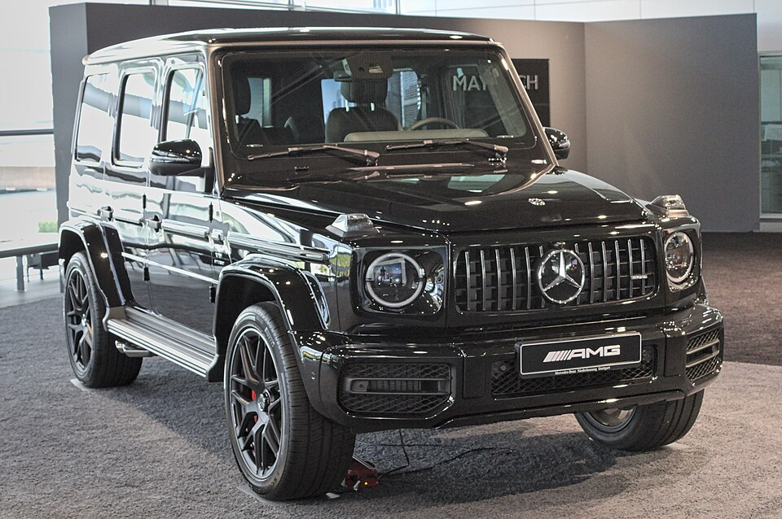

História do mercedes g63
A Mercedes-Benz G63 AMG é uma das versões mais icônicas e potentes do Mercedes-Benz Classe G, um dos SUVs de luxo mais reconhecíveis do mundo. Lançado originalmente na década de 1970, o Classe G foi desenvolvido inicialmente como um veículo militar, mas ao longo dos anos foi transformado em um símbolo de luxo, sofisticação e desempenho, especialmente com o modelo G63 AMG.
A primeira versão
A primeira versão do Mercedes-Benz Classe G , também conhecida como G-Wagen (abreviação de "Geländewagen", que significa "veículo de campo" em alemão), foi lançada em 1979 e inicialmente foi projetada como um veículo utilitário militar. Porém, logo ganhou popularidade no mercado civil devido à sua robustez, capacidade off-road e design único. A versão G63 AMG, que você se referiu, é uma interpretação moderna do Classe G, mas a versão inicial foi bem diferente, focada na utilidade.

O projeto do Classe G começou na década de 1970, quando a Mercedes-Benz foi convidada pelo exército iraniano para desenvolver um veículo militar. Inicialmente, a ideia era criar um veículo utilitário robusto e versátil para suportar condições difíceis de terrenos acidentados e ambientes adversos. A Daimler-Benz (agora Mercedes-Benz) colaborou com a Steyr-Daimler-Puch, uma empresa austríaca, para desenvolver o G-Wagen.
Surge O Modelo Civíl
Primeiro Modelo Civil
Embora tenha começado como um veículo militar, a Mercedes-Benz decidiu começar a produzir uma versão civil do Classe G em 1979. Inicialmente, estava disponível em várias configurações, incluindo 2 portas e 4 portas, com diferentes tipos de caçambas e capacidades de carga. No início, o foco não era no luxo, mas sim na funcionalidade e durabilidade Em suma, a primeira versão do Classe G foi criada com foco na robustez e versatilidade, mas foi a partir da década de 1980 que o modelo começou a se tornar um símbolo de luxo